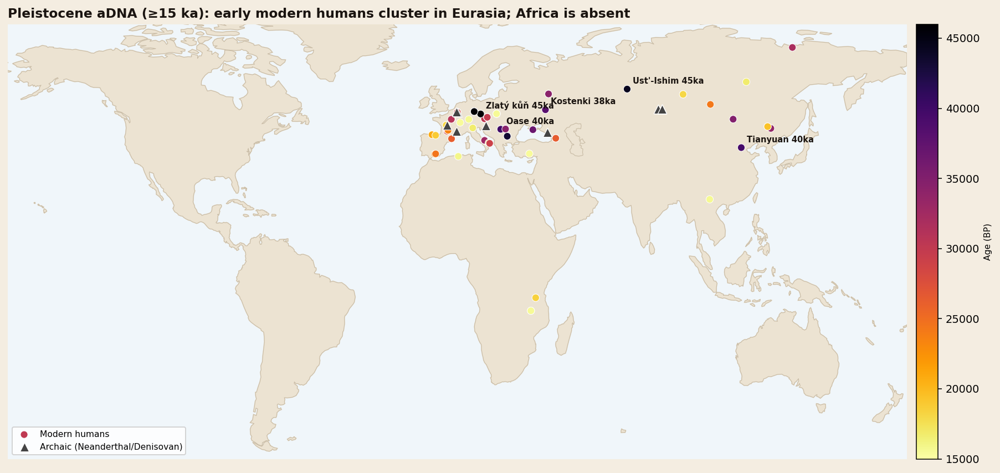

Ust’-Ishim man was a modern human who lived in western Siberia about 45,000 years ago. His femur, found in 2008 by the Irtysh River, produced a high-quality genome in 2014. He carried about 2.3% Neanderthal DNA, but in longer stretches than living people, which let researchers estimate that his ancestors mixed with Neanderthals 7,000–13,000 years before he lived. Newer studies of more genomes place the main mixing period a little later, around 50,500–43,500 years ago.
The genome of Ust’-Ishim man was read an average of 42 times over. For a 45,000-year-old bone, that was extraordinary. Many ancient genomes are read only about once on average, or less, leaving gaps everywhere.
That quality turned a stray thigh bone into one of the most useful fossils for understanding when modern humans and Neanderthals interbred.
A femur on the riverbank
In 2008, a fairly complete left femur shaft was found on the banks of the Irtysh River, near the settlement of Ust’-Ishim in Omsk Oblast, western Siberia. Nobody excavated it. It was eroding out of river deposits on the left bank, and the exact spot it came from is unclear. Late Pleistocene fossils there turn up in sand and gravel layers roughly 50,000 to 30,000 years old, so the bone’s own date had to come from the bone itself.
The bone itself was dated directly. Two radiocarbon measurements at Oxford, numbered OxA-25516 and OxA-30190, each gave 41,400 radiocarbon years, with error ranges of 1,300 and 1,400 years. Radiocarbon years are not calendar years. After calibration, the bone dates to about 45,000 years ago, between 46,880 and 43,210 years ago at 95% probability. Our guide to how scientists date fossils explains why that correction matters.
Chemical traces in the bone hint at his diet. Carbon and nitrogen isotopes point to land plants and the animals that ate them, with an important share of protein that may have come from freshwater fish.

Who was Ust’-Ishim man related to?
Qiaomei Fu, Svante Pääbo and colleagues published the genome in Nature in October 2014. The X and Y chromosomes had about half the coverage of the rest, so the bone came from a man.
The surprise was his position on the family tree. Ust’-Ishim man is equally closely related to present-day Asians and to western Eurasians who lived 8,000 to 24,000 years ago. His population, the authors concluded, split from the ancestors of western and eastern Eurasians before, or at the same time as, those two groups split from each other. No living population is known to descend from his people in particular.
One detail stands out. He is as close to ancient western Eurasians as to Asians, but not to present-day Europeans. Fu’s team noted this fits the idea that Europeans today carry some ancestry from a population that took no part in the first dispersals into Europe and Asia. That is consistent with the “Basal Eurasian” ancestry a 2014 study found in early European farmers.
Contamination was carefully checked. The estimated share of modern human mitochondrial DNA in the sample was about 0.5%, with a 95% range of 0.26–0.94%, low enough not to distort the results.
In the AADR data behind our genome atlas, he appears as Ust_Ishim, with a mean date of about 44,370 years ago and a Y chromosome in haplogroup K2. He is no longer the oldest modern human there. Individuals from Ranis in Germany and Zlatý kůň in Czechia, published later, carry mean dates of about 45,880 years.
How Neanderthal DNA keeps time
Ust’-Ishim man carried about 2.3% Neanderthal ancestry (plus or minus 0.3%). That is similar to living East Asians (1.7–2.1%) and Europeans (1.6–1.8%), so the mixing had already happened by 45,000 years ago. Our article how much Neanderthal DNA do you have covers what that DNA does today. No Denisovan contribution was detected, which fits Denisovan ancestry being concentrated in Oceania and parts of Asia, as covered in Denisovan DNA in modern humans.
The useful part is not how much Neanderthal DNA he had but how it was arranged. Each generation, chromosomes swap pieces during the formation of eggs and sperm, a process called recombination. Every swap can cut an inherited Neanderthal segment shorter. The longer ago the mixing, the shorter the surviving pieces.
His Neanderthal segments were roughly 1.8 to 4.2 times longer than those in people today. Converting length into time gave 232 to 430 generations between the mixing and his life. The arithmetic is simple:
| Step | Low estimate | High estimate |
|---|---|---|
| Generations since mixing | 232 | 430 |
| Years per generation (assumed) | 29 | 29 |
| Years before he lived | ~6,700 | ~12,500 |
| Calendar date of mixing | about 50,000–60,000 years ago | |
The authors rounded this to 7,000–13,000 years before he lived. The result also tied most Neanderthal ancestry in living non-Africans to a mixing event close to the main expansion of modern humans out of Africa, rather than to much earlier contact. That fits the framework set out in the Out of Africa theory explained.
A bonus: calibrating the mutation clock
A dated genome is also a ruler. Because Ust’-Ishim man stopped accumulating mutations 45,000 years ago, the extra mutations in living non-Africans since then can be counted. Fu’s team estimated an autosomal mutation rate of 0.4 to 0.6 × 10−9 per DNA position per year. Estimates like this calibrate the genetic dates used across human evolution.
The clock gets reset: newer estimates
Ten years later, two studies revisited the timing with far more data, and their answers differ from Fu’s.
- Iasi and colleagues (Science, December 2024) catalogued Neanderthal segments in more than 300 genomes spanning 50,000 years. They found that most Neanderthal ancestry traces to a single, extended period of gene flow between about 50,500 and 43,500 years ago.
- Sümer and colleagues (Nature, online December 2024) analysed high-coverage genomes from Ranis and Zlatý kůň, about 45,000 years old. They dated a single admixture event, shared by all non-Africans, to about 45,000–49,000 years ago.
Here is the tension worth noticing. If the main mixing ended around 45,000 years ago, it overlaps with Ust’-Ishim man’s own lifetime, while his segment lengths implied a gap of several thousand years. The likeliest explanation is method. Dates from segment length depend on assumed generation times, recombination maps and the model of how mixing happened, and an extended period of contact can produce a different signal from a single pulse. The overall window, roughly 50,000 to 45,000 years ago, is now well supported. The exact timing, to within a few thousand years, is still debated.
A lineage that vanished
Sümer’s team made another point that changes how we see Ust’-Ishim man. If all non-Africans share one main Neanderthal admixture event, then their ancestors lived as one population at that time. Early groups such as those at Ranis and Zlatý kůň, and Ust’-Ishim man’s people, appear to have been early offshoots that left little or no detectable ancestry in people living today. You can follow these early dispersals on the migration map, and place them against seven million years of human evolution on the interactive family tree.
Ust’-Ishim, Zlatý kůň, Ranis and the other Ice Age genomes are plotted by place and date on the interactive atlas.
Open the AADR Genome Atlas →Frequently asked questions
How old is Ust’-Ishim man?
About 45,000 years old. Two direct radiocarbon dates on his femur calibrate to between 46,880 and 43,210 years ago at 95% probability.
Where was Ust’-Ishim man found?
His femur was found in 2008 eroding from the bank of the Irtysh River near Ust’-Ishim, in Omsk Oblast, western Siberia, Russia.
How much Neanderthal DNA did Ust’-Ishim man have?
About 2.3%, similar to people living outside Africa today, but in longer segments, showing the mixing had happened only some thousands of years before he lived.
When did humans and Neanderthals interbreed?
Fu’s 2014 study of Ust’-Ishim estimated about 50,000–60,000 years ago. Studies in 2024 and 2025 using many more genomes place the main period at roughly 50,500 to 43,500 years ago.
Does anyone today descend from Ust’-Ishim man?
No living population is known to descend specifically from his people. His population split from the ancestors of eastern and western Eurasians at about the time they separated from each other.
- Fu, Q. et al. (2014). 'Genome sequence of a 45,000-year-old modern human from western Siberia.' Nature 514, 445–449. pmc
- Iasi, L. N. M. et al. (2024). 'Neanderthal ancestry through time: Insights from genomes of ancient and present-day humans.' Science 386, eadq3010. doi.org
- Sümer, A. P. et al. (2025). 'Earliest modern human genomes constrain timing of Neanderthal admixture.' Nature 638, 711–717. doi.org